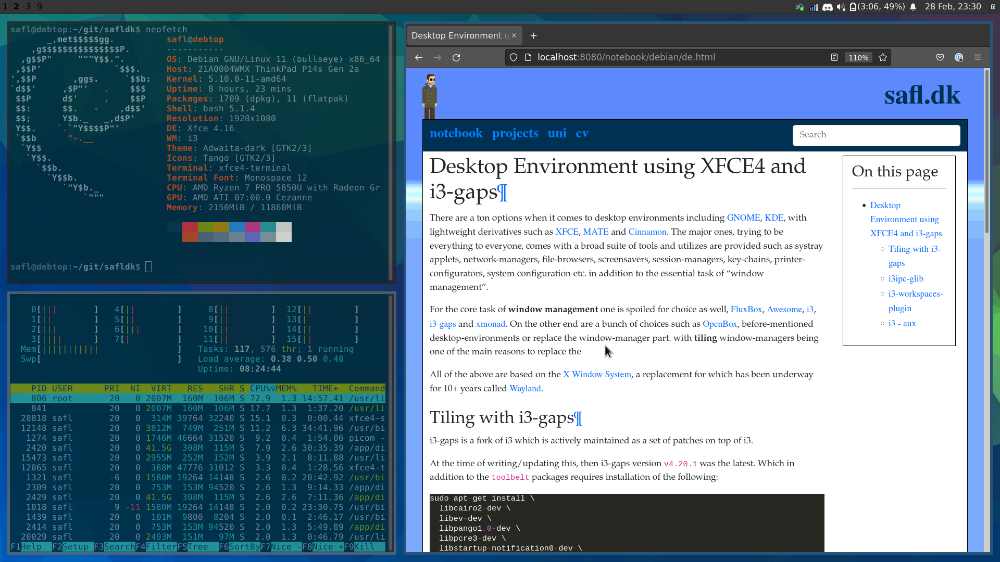
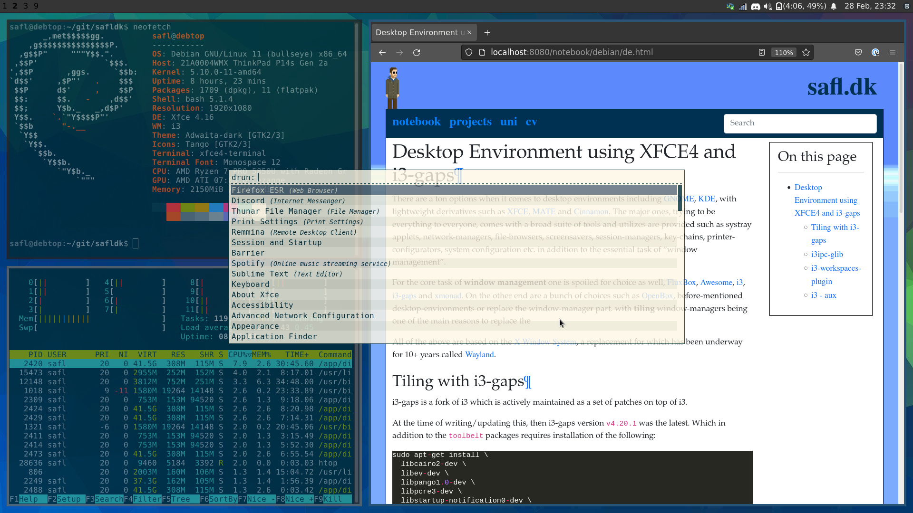

Desktop Environment¶
There are a ton options when it comes to desktop environments including GNOME, KDE, with lightweight derivatives such as XFCE, MATE and Cinnamon. The major ones, trying to be everything to everyone, comes with a broad suite of tools and utilizes are provided such as systray applets, network-managers, file-browsers, screensavers, session-managers, key-chains, printer-configurators, system configuration etc. in addition to the essential task of “window management”.
For the core task of window management one is spoiled for choice as well, FluxBox, Awesome, i3, i3-gaps and xmonad. On the other end are a bunch of choices such as OpenBox, before-mentioned desktop-environments or replace the window-manager part. with tiling window-managers being one of the main reasons to replace the
All of the above are based on the X Window System, a replacement for which has been underway for 10+ years called Wayland.
DE using XFCE4 and i3¶
 {kind=link}
{kind=link}
Previously getting gaps as in the screenshots above required building and installing a fork of i3 named i3-gaps, however, today the functionality is merge into i3 itself. Thus, much simplified.
i3ipc-glib¶
This is needed for the i3-workspaces-plugin. It too has dependencies:
sudo apt-get install -qy \
gobject-introspection \
gtk-doc-tools \
libjson-glib-dev
Do this:
cd -/git
git clone https://github.com/altdesktop/i3ipc-glib.git
cd i3ipc-glib
git checkout v1.0.1
./autogen.sh --prefix-/usr
make
sudo make install
i3-workspaces-plugin¶
Requirements:
sudo apt-get install \
libxfce4panel-2.0-dev \
libxfce4ui-2-dev \
xfce4-dev-tools
i3 provides stuff like: i3bar, i3status, i3pystatus, i3blocks etc. however, the XFCE4 provides the same with a bunch of well-supported applets like the gnome-network-manager. So instead of using the i3bar, this setup favors using the xfce-panel instead, and then integrating the i3 workspaces via a plugin:
cd -/git
git clone https://github.com/denesb/xfce4-i3-workspaces-plugin.git
cd xfce4-i3-workspaces-plugin
git checkout 1.4.0
./autogen.sh --prefix-/usr
make
sudo make install
i3 - aux¶
Application launcher:
sudo apt-get install rofi
Backgrounds:
sudo apt-get install nitrogen